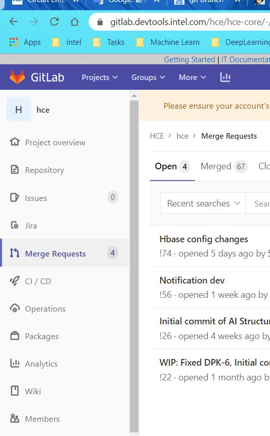
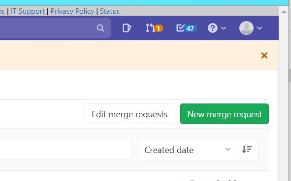
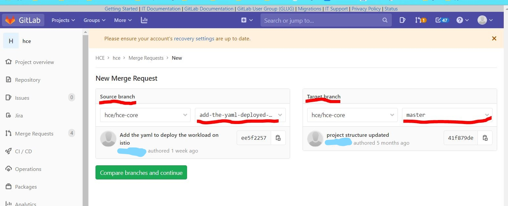
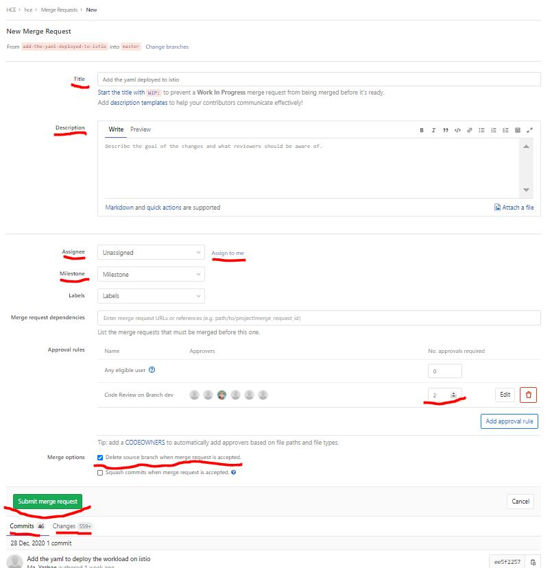
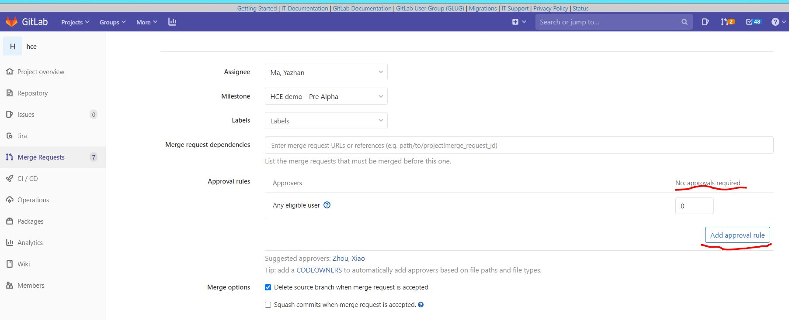
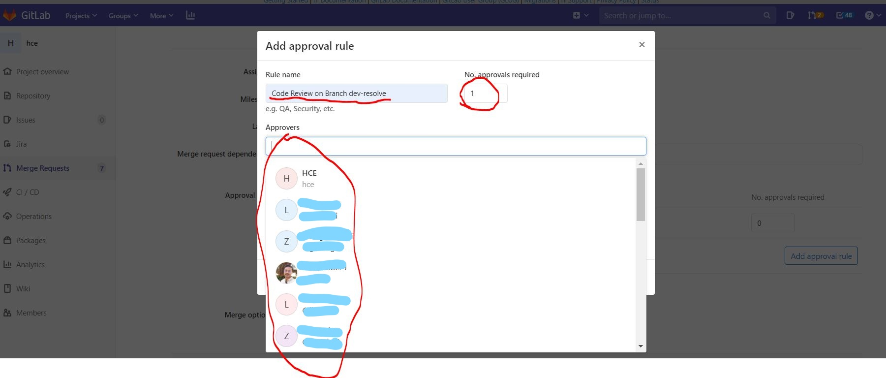
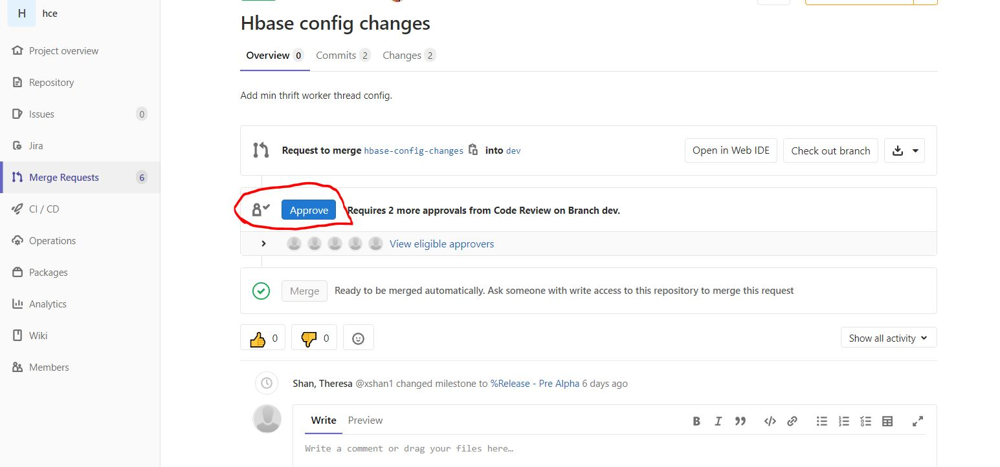
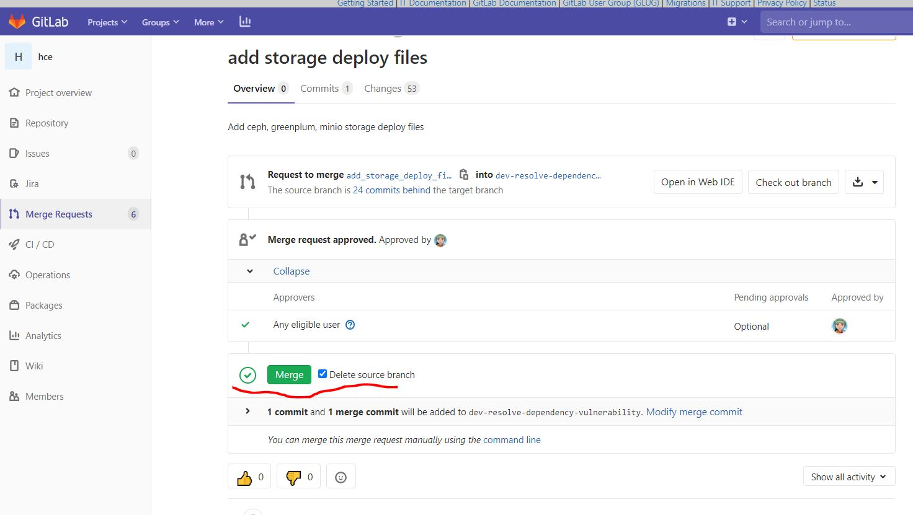

# git 放弃本地修改
1. 未使用 git add 缓存代码时
l | git pull |
| git checkout -- <filePathName> // git checkout -- README.md |
但是此命令不会删除掉刚新建的文件。因为刚新建的文件还没已有加入到 git 的管理系统中。所以对于 git 是未知的。自己手动删除就好了.
2. 已经使用了 git add 缓存了代码
l | git pull |
| git reset HEAD <filePathName> // git reset HEAD readme.md |
| |
| |
| git reset HEAD . |
此命令用来清除 git 对于文件修改的缓存。相当于撤销 git add 命令所在的工作。在使用本命令后，本地的修改并不会消失，而是回到了如（1）所示的状态。继续用（1）中的操作，就可以放弃本地的修改.
3. 已经用 git commit 提交了代码
l | git pull |
| git reset --hard HEAD^ // 回退到上一次commit的状态 |
| |
| |
| git log // 查看git的提交历史 |
| git reset --hard <commitid> // |
# git 创建新的分支
1. 使用 git bash 进入到已有项目根目录下，执行如下命令创建分支
l | git checkout -b dev-01 // 此命令相当于`git branch dev-01; git checkout dev-01;` |
2. 查看当前分支
l它就会有如下显示：
l3. 将新建分支提交到远程仓库，远程会自动生成同名新分支
l4. 拉取远程分支，但会发现提示没有指定要与哪个分支合并，无法与远程仓库进行关联，所以需要先关联，后拉取
l | git branch --set-upstream-to=origin/dev-01 |
| git pull |
查看关联情况
l- 最后把本地代码推上去
l | git add * |
| git commit -m 'your commit info' |
| git push origin dev-01 |
- 切换分支执行上面命令后，查看远端 github 仓库新分支仍然有源分支文件，可以:
l | git rm <源文件(夹)> |
| git commit -m "*" |
| git push origin dev-01 |
# git 切换分支
- 查看远程分支
l | git branch -a |
| * master |
| remotes/origin/HEAD -> origin/master |
| remotes/origin/v0.9rc1 |
- 查看本地分支
l- 切换分支
l | git pull //拉去远程分支最新的文件, 之后再此分支基础上创建新的分支 |
| git checkout -b v0.9rc1 origin/v0.9rc1 //如果本地已经有v0.9rc1分支了就可以直接`git checkout v0.9rc1` |
| Branch v0.9rc1 set up to track remote branch v0.9rc1 from origin. |
| Switched to a new branch 'v0.9rc1' |
已经切换到 v0.9rc1 分支了
l | git branch |
| master |
| * v0.9rc1 |
切换回 master 分支
l | git checkout master |
| Switched to branch 'master' |
| Your branch is up-to-date with 'origin/master'. |
# 分支的新建与合并
https://git-scm.com/book/zh/v2/Git - 分支 - 分支的新建与合并
# git diff 加上颜色
l | git config --global color.diff auto |
其它方式:
l# git diff 显示完整信息
l | git config --global core.pager "less -r" |
# git status 加上颜色
l | git config --global color.status auto |
# git branch 加上颜色
l | git config --global color.branch auto |
# interactive 加上颜色
l | git config --global color.interactive auto |
# git reset 到指定 commit log
l | git log |
| git reset --hard <Commit-ID> |
# git 创建 merge request
- 切换到要修改的分支
l | git checkout -b <BRANCH> origin/<BRANCH> |
- 再要修改的分支基础上，创建新的分支，此时不要修改原要修改分支的文件
l | git checkout -b <NEW-BRANCH-NAME> |
- 修改文件然后把新建的分支
push 到远程仓库
l | git add <FILE> |
| git commit -m "<COMMENTS>" |
| git push origin <NEW-BRANCH-NAME> |
- 登陆 gitlab, 选择左边的 Merge Requests



之后填写 Title , Description , Assignee (选择自己).
Approval rules 是要几个人 review 并 approve 之后才能 merge 成功，默认是 2 个人，可以改为 1 个人或更多.

如果没有 approval rule 可以新建.



之后勾选 merge 成功后删除新建的分支.
reviewer 可以查看 commits 或 Changes, 如果有疑问可以提交 commits 通知提交 merge request 的自己修改.
- 可以 reviewer 或自己点击 merge 按钮进行 merge 并删除新建的分支

# **git 删除 untracked files **
删除 untracked files
l连 untracked 的目录也一起删掉
l# git clone 到指定本地目录
clone 项目到本地的 themes/stun 目录
l | git clone https://github.com/liuyib/hexo-theme-stun.git themes/stun |
# 删除新建的分支
git 删除本地分支
lgit 删除远程分支
l | git push origin :br (origin 后面有空格) |